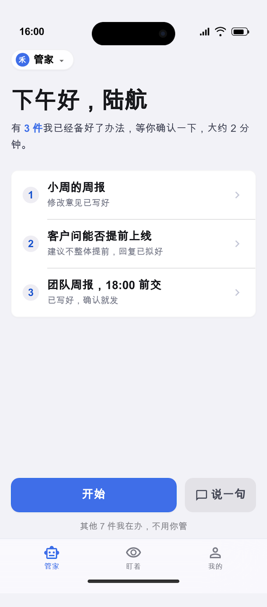
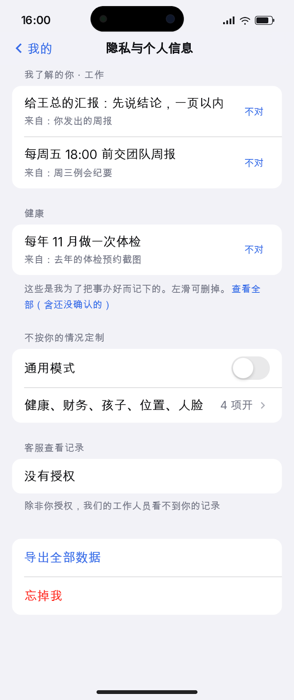

小禾 App · iOS 风格（Stitch A 套）
结构按
docs/ITER1/ui/drafts/app-方案B-细化.html
；外观为 Stitch 生成的冷灰 iOS 风格（背景 #F2F2F7，主色 #3F6EE8）。演示人物 p5 陆航，周五 16:00。
① 简报封面

打开页面 ›
② 逐件过：第 1 件（右滑暂存）
打开页面 ›
③ 结束页
打开页面 ›
④ 点“管家”：顶部下拉面板
打开页面 ›
⑤ 我的
打开页面 ›
⑥ 隐私与个人信息

打开页面 ›
已确认（2026-11-05）：
采用 Stitch A 套（冷灰 iOS）；暖米色 B 套不用。逐件过页面加入
右滑暂存
：向右滑动 = 暂存到稍后处理，与右上角“稍后”效果相同，两种方式并存。
待 Stitch 再改：
④ 下拉面板去掉多画的手机外框、灵动岛“管家运行”、麦克风和右上角“…”，时间改 16:00，背景露出压暗的封面；③⑤ 去掉右上角“…”；② 去掉“待确认事项”标签；图标改 iOS 细线风格，底部“管家”不用机器人图标；字体用苹方 / SF Pro。
页面代码为 Stitch 导出（依赖 Tailwind CDN），只作界面参考，不可点击。
 打开页面 ›
打开页面 › 打开页面 ›
打开页面 › 打开页面 ›
打开页面 › 打开页面 ›打开页面 ›打开页面 ›打开页面 ›打开页面 ›
打开页面 ›打开页面 ›打开页面 ›打开页面 ›打开页面 ›